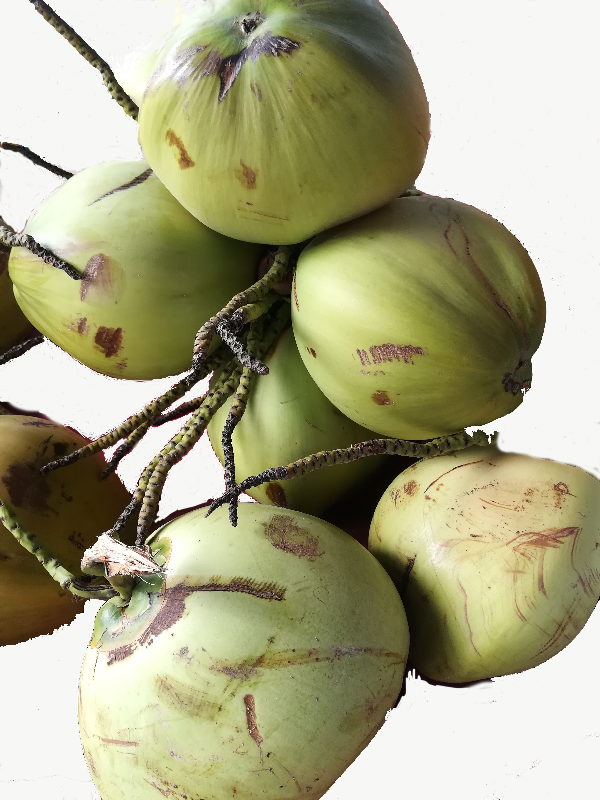
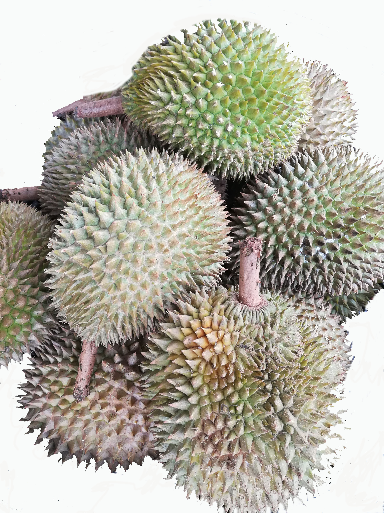

Papaya

Papayas grow in tropical climates and are also known as papaws or pawpaws. Their sweet taste, vibrant color, and the wide variety of health benefits The possible health benefits of consuming papaya include a reduced risk of heart disease, diabetes, cancer, aiding in digestion, improving blood glucose control in people with diabetes, lowering blood pressure, and improving wound healing.
Papayas are also a good source of:
They also have B vitamins, alpha and beta-carotene, lutein and zeaxanthin, vitamin E, calcium, potassium, vitamin K, and lycopene, the powerful antioxidant most commonly associated with tomatoes.
Coconut
Unlike many other fruits that are high in carbs, coconuts provide mostly fat. They also contain protein, several important minerals, and small amounts of B vitamins. However, they’re not a significant source of most other vitamins.
The minerals in coconut are involved in many functions in your body.
Coconuts are especially high in manganese, which is essential for:
Durian
Durian is widely celebrated for its long list of health benefits:
Banana Vitamin B6 from bananas is easily absorbed by your body and a medium-sized banana can provide about a quarter of your daily vitamin B6 needs.
Vitamin B6 helps your body:
Vitamin B6 is also good for pregnant women as it helps meet their baby’s development needs.
Dragon Fruit Dragon fruit, also known as Pitaya fruit, contains approximately 60 calories per fruit. Dragon fruits are rich in vitamins including vitamin C, B1, B2 and B3. Watermelon Watermelons are mostly water and this refreshing fruit is soaked with nutrients Equally important is that these fruits are rich in antioxidants as high as acai berries, which is why people often label the dragon fruit as a “super-fruit”. Each juicy bite has significant levels of vitamins A, B6 and C, lots of lycopene, antioxidants and amino acids. There's even a modest amount of potassium.
Rambutan The rambutan fruit is rich in many vitamins, minerals and beneficial plant compounds. Its flesh provides around 1.3–2 grams of total fiber per 3.5 ounces (100 grams) The rambutan peel and seed are thought to be rich sources of nutrients, antioxidants and other beneficial compounds. Though some people eat them, neither are currently considered edible Mango Mango is high in vitamin C, which promotes healthy hair and skin. This vitamin is essential for making collagen